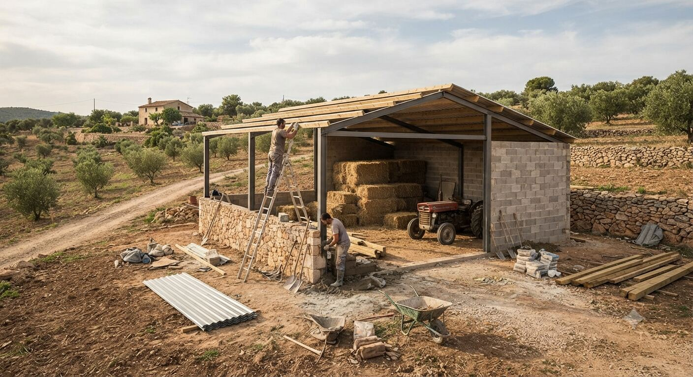
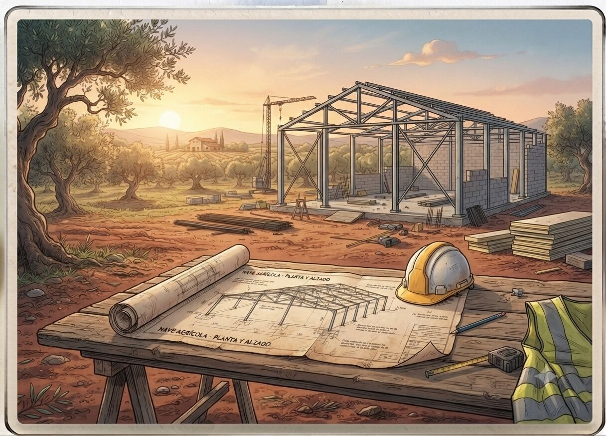

Proyectos de edificaciones y construcción rural
Naves agrícolas, almacenes, balsas de riego e instalaciones ganaderas, proyectadas y tramitadas de principio a fin.


Por qué conviene proyectar bien desde el principio
Tras episodios como la DANA de 2024, muchas infraestructuras agrarias (naves, casetas, balsas, muros) quedaron dañadas o inservibles, y su reconstrucción exige ahora un proyecto técnico que muchas construcciones originales nunca tuvieron. A la vez, la administración es cada vez más estricta respecto a suelo no urbanizable, actividad vinculada a la explotación y normativa de prevención de incendios o vertidos.
Un proyecto bien planteado desde el inicio evita paralizaciones de obra, expedientes sancionadores y sobrecostes por soluciones improvisadas sobre el terreno.
Qué incluye el servicio
- Proyecto técnico y dirección de obra de naves agrícolas y almacenes.
- Instalaciones ganaderas: diseño funcional, ventilación, gestión de purines/estiércol.
- Balsas de riego, depósitos y pequeñas infraestructuras de acumulación de agua.
- Legalización de construcciones existentes sin proyecto (declaración responsable o licencia según el caso).
- Estudios de impacto ambiental y de integración paisajística cuando la normativa lo requiere.
- Certificados de final de obra y coordinación con otros técnicos (arquitectos, instaladores).
Cómo se trabaja
Se estudia primero la viabilidad urbanística y agraria de la parcela (clasificación del suelo, superficie mínima, vinculación a la explotación), después se redacta el proyecto técnico y se tramita ante el Ayuntamiento y, si procede, ante la Conselleria competente, con seguimiento durante toda la ejecución de la obra.
Preguntas frecuentes
¿Puedo construir una nave agrícola en cualquier parcela rústica?
No siempre; depende de la clasificación del suelo, la superficie mínima vinculada y si la construcción está justificada por la actividad de la explotación. Se estudia la viabilidad urbanística antes de proyectar.
¿Qué pasa si mi construcción quedó dañada por la DANA y no tenía proyecto original?
Se puede tramitar su reconstrucción, pero al no existir proyecto previo, probablemente haya que redactar uno nuevo adaptado a la normativa actual, además de la legalización correspondiente.
¿Quién tramita el proyecto ante el ayuntamiento?
Nos encargamos de la tramitación completa ante el ayuntamiento y, si procede, ante la Conselleria competente, incluyendo el seguimiento durante la ejecución de la obra.
¿Se necesita un estudio de impacto ambiental para cualquier nave o balsa de riego?
No siempre; depende del tamaño, la ubicación y la normativa municipal o autonómica aplicable. Se revisa en cada caso si es exigible.